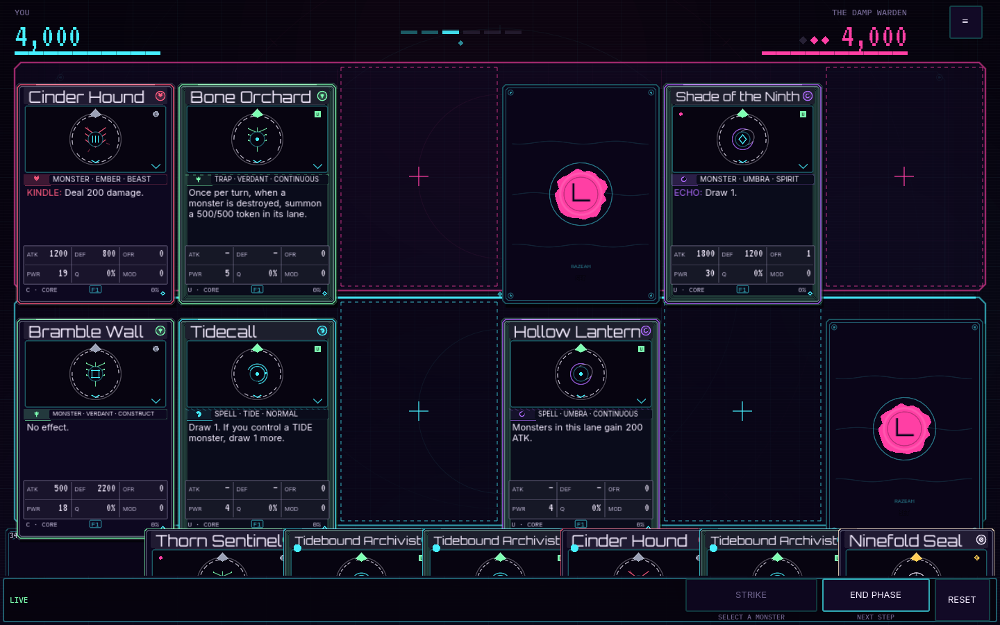
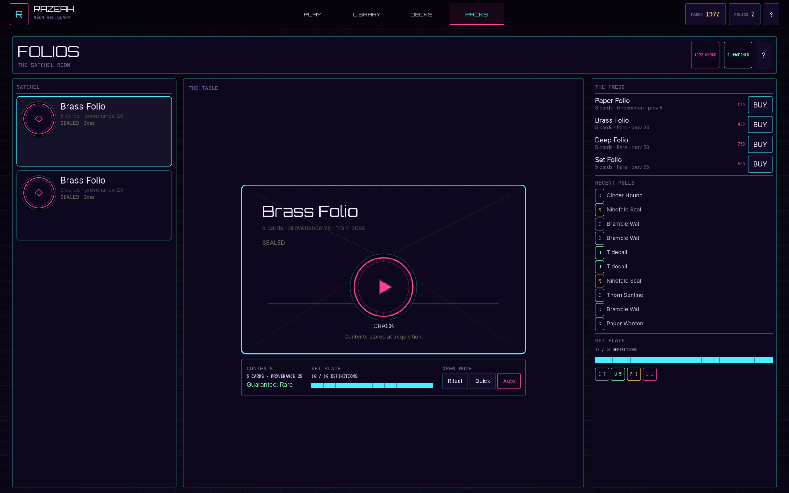

MVFULL HAND
Tabletop UX · card ergonomics
Mara Voss
“The hand is the player's body.” A title strip is a memory test. If the player has to hover to remember what they hold, the hand is not in the game.
Interaction review·packs + table
Two rooms, one problem: the player cannot see the thing they are about to touch. Packs still read like a receipt table, not a pack opening. The table hides the hand in a 30% shelf, hides the panel behind a mystery ≡, and only plays cards by select-then-click. A seven-person panel reviewed the options; this page is the argument, the live prototypes, and the shortlist.
Waves 0–3 are landed: the rename, R1 pinned rail, H1/H2 hand, D2 magnetic drop, and the P1 Rip & Fan ceremony. The prototypes below remain the reference; they use the real card renders and the real 1440×900 budget, but their rules are simplified. The locked pick is at 08 Pick.

CURRENT 1440×900These are fictional review personas, not quotes from real people. Each one owns a different failure mode: the hand, the input, the pack, the information architecture, the window budget, the psychology, and the drop. Their job was to disagree productively.
“The hand is the player's body.” A title strip is a memory test. If the player has to hover to remember what they hold, the hand is not in the game.
“Every drag needs a click twin.” Every hover needs a focus twin. A drag-only table is a table that some players cannot sit at.
“A pack is a container.” The opening is the container failing beautifully: the tear, the flap, the spill. If the container never fails, it is a menu.
“The panel is a place, not a popup.” Intent, log, inspect, and actions need a wall the eye can return to. A drawer is a place you keep losing.
“The window is the budget.” At 1440 the hand is the budget; at 1920 the board is. Spend it where the player is looking, not where the code is easiest.
“Commit, then reveal.” The result is sealed before the first frame. The ceremony only decides how it lands. Clicking each card is the player spending attention.
“Drag is a promise.” The drop must be legal before the card leaves the hand. Glow the zones first; snap back honestly when the promise is broken.
Sana: “A pack is a container with a tear line. The player should feel the material fail.”
Elias: “The reveal is a sequence of commitments: crack, deal, turn, stamp. Clicking each card is the player spending attention, not the game spending it for them.”
Rook: “The fan is the receipt. Keep the cards on screen after the last flip.”
PANEL VERDICT One state machine, three skins. Rip & Fan for standard packs; Reliquary Case for premium; Stack Peel for narrow windows. Default to Rip & Fan, and never auto-turn the last card without asking.
Rook: “A persistent rail is a place. The board can afford 180px cards; the player cannot afford to hunt for the log.”
Nadia: “At 1440 a 280px rail costs 20% of the board. Pin it at 1600+, peek it at 1440, command-deck it at 960.”
Ivo: “If it opens over the board, it needs a visible edge tab, a close button, Esc, and focus return. No mystery ≡.”
PANEL VERDICT A responsive panel, not one layout: Cockpit Rail at ≥1600, Edge Peek at 1280–1599, Command Deck below. The top-right button is labeled and carries the Warden intent chip.
Mara: “If the hand is a 30% shelf, the player plans by hover. That is not a hand; it is a tooltip.”
Nadia: “Full hand at 1440 costs the board 20%. A 60% tray costs 5% and shows name, type, and stats.”
Ivo: “Hover cannot be the only way. Pin, focus, and click must do the same job. On touch, a tray is the only honest default.”
PANEL VERDICT Readable Tray 60% is the default at 1440; Full Hand is a real option at ≥1920; Spring Shelf stays below 1280. The hand never drops below the name/type band; the full face is one lift away.
June: “No. Drag is a second input, not a replacement. The click path stays; the drag path shares the same legal-action resolver.”
Ivo: “Keyboard and touch need the same verbs: select, choose lane, confirm, cancel. Drag is a shortcut, not a gate.”
Mara: “Drag is the fastest way to say ‘this card goes there’. Keep it direct; don't make me open a menu on drop.”
PANEL VERDICT Hybrid: drag primary, click fallback, Shift/right-drag to set, keyboard lane picker. Legal zones glow before the lift; invalid drops snap back with no toast.
These are the current Godot screens, not mockups. The pack screen has the right bones but the wrong verb: it cracks a letter and shows a receipt. The table has the right board but hides the two things the player needs most: their hand and the panel.
folio_mode.
The rename and the ceremony are two different jobs. Do the rename once, with
a save migration, so “folio” does not leak back into the UI. Then build one
PackCeremony state machine and let the container skin change.
| Option | What changes | Effort | Save risk | Verdict |
|---|---|---|---|---|
| N1 Surface only | UI strings say Packs. Code, content IDs, and settings still say folio. | S | None | No. The drift comes back in errors, tests, and docs. |
| N2 Full rename + aliases | UI, classes, functions, content keys, settings, and save. Keep folio.* aliases for one version. |
M | Managed | Recommended. Clean player language without losing testers' saves. |
| N3 Hard cut | Everything renamed, no aliases, no migration. | M | High | No. Old packs and folio_mode break silently. |
pack.papercontent/folios.yaml → packs.yaml; alias folio.paper for one versionPackScreen · PackCeremonyFolioScreen → PackScreen; Content.folio → Content.pack; Session.buy_folio → buy_packfolio_mode → pack_mode; rewrite pack kindsPack on the table. Name, set, guarantee. No purchase CTA.
Click or drag the tear line. Paper/foil flex, flecks, 80–160ms.
Cards rise into a fan with a 55ms stagger. The container stays.
Hover or focus a back: pips, ring, label. Read from the committed card.
Click each card. 470ms ritual, 190ms quick, 60ms hold. Same at every rarity.
NEW or ×N lands on the card. Duplicates are income, not failure.
120 / 220 / 420 / 900ms. Local bloom; no full-screen flash.
Counts, set gauge, recent pulls. Cards stay clickable. Skip lands here.
The panel is not a settings menu. It is the Warden's intent, the log, the inspect lens, and the legal actions. It has to be visible enough to glance at, and honest enough to get out of the way. Four layouts were compared at 1440×900.
Labeled, 48px, with a live intent chip. Not ≡. It remembers its tab and pin state.
Intent stays at the top even when the panel is closed. Piles and descent live at the bottom.
The rail ends above the hand shelf. The hand keeps the full width. Edge Peek yields when you pick up a card.
The current shelf shows 30% of the card width, which is about 21% of its height: enough for the name, not enough for the type or stats. The panel compared five budgets. The exact numbers below are 5:7 card widths at each window; the hand height is the shelf.
| Window | Current shelf | Readable tray 60% | Full hand | Panel call |
|---|---|---|---|---|
| 1280×720 | 167 board · 50 shelf | 152 board · 91 shelf | 123 board · 123 hand | Tray |
| 1440×900 | 225 board · 68 shelf | 205 board · 123 shelf | 166 board · 166 hand | Tray default · Full option |
| 1920×1080 | 283 board · 85 shelf | 258 board · 155 shelf | 209 board · 209 hand | Full hand |
| 2560×1440 | 399 board · 120 shelf | 364 board · 218 shelf | 295 board · 295 hand | Full hand |
Rounded 5:7 card widths. The 60% tray is 60% of the card width: name, seal, and type line at rest; the full face is one lift away. The live table lab and the game use about 64% at 1440 (a little above the 60% budget) so the type line stays clear. The pinned panel at 1440 can width-limit the board to ~180; the hand still spans the full window, so it can stay at 205. That is why the panel must end above the hand.
Drag is the fastest way to say “this card goes there.” It is also the easiest
way to break a table. The panel's rule: the legal zones appear before the
card leaves the hand, the drop resolves through the same
DuelRules.legal_actions as the click path, and the click path
never goes away.
Card lifts 8px, scales 1.04, keeps its face, casts a shadow. The source slot holds a ghost.
Amber corner brackets and a 6% fill. Invalid zones dim to 30%. Enemy targets get a pink bracket.
Valid drop snaps to the zone center. Invalid drop returns to the hand with a small red pulse; no toast.
A SET badge rides the drag ghost. On touch, a two-chip choice appears after the lift.
Drag a board monster onto an enemy monster or the open face. An arrow follows the pointer.
Click: select card, click zone. Keyboard: focus, arrows, Enter, S, Esc. Touch: long-press 180ms.
Emit the pointer intent; keep the actor stable.
Own the ghost, legal zone glow, magnet, snap-back. Read zone_rects and slot_rects.
Use the same _action_for_zone path as click. No new rules, no new state.
Legal, invalid, cancel, touch, keyboard, reduced motion, 960–2560. The rule stays in DuelRules.
This is the panel's recommended composition at 1440×900: a labeled panel, a hand you can read, and cards that drag to legal zones. Toggle the panel and hand budgets to feel the tradeoff. The rules are simplified; the geometry is the real 5:7 budget.
DuelRules.legal_actions.
The panel's recommendation is a package, not a single option. Pick the parts you want, leave a note, and copy the feedback. Nothing is committed until you say so.
| Option | Clarity | Board friendly | Low effort | Accessible | Votes |
|---|---|---|---|---|---|
| P0 Envelope | 3 | 5 | 5 | 4 | 0 |
| P1 Rip & Fan | 5 | 5 | 4 | 5 | 4 |
| P2 Reliquary Case | 4 | 5 | 3 | 4 | 2 |
| P3 Stack Peel | 5 | 5 | 4 | 4 | 1 |
| R1 Cockpit Rail | 5 | 3 | 3 | 4 | 3 |
| R2 Edge Peek | 4 | 5 | 4 | 3 | 2 |
| R3 Command Deck | 3 | 5 | 4 | 4 | 1 |
| R4 Bottom Drawer | 3 | 2 | 3 | 4 | 0 |
| H0 Spring Shelf | 2 | 5 | 5 | 1 | 0 |
| H1 Readable Tray | 4 | 4 | 5 | 4 | 4 |
| H2 Full Hand | 5 | 3 | 4 | 5 | 2 |
| H3 Fan Arc | 3 | 3 | 3 | 2 | 1 |
| H4 Side Hand | 4 | 3 | 2 | 3 | 0 |
| D0 Click-Select | 3 | 5 | 5 | 5 | 0 |
| D1 Direct Drag | 4 | 5 | 4 | 2 | 1 |
| D2 Magnetic Drop | 4 | 5 | 3 | 3 | 2 |
| D4 Hybrid | 5 | 5 | 2 | 5 | 4 |
Scores are design judgments, not measurements. “Board friendly” means the option leaves the most card size; “low effort” means the smallest implementation surface.
N2 full rename with aliases. UI strings, PackScreen, content keys, pack_mode, save v2 migration, tests, docs.
R1 at ≥1600, R2 at 1440, R3 below. Labeled top-right button + intent chip. H1 tray default; H2 full-hand option at ≥1920; H0 below 1280.
Gate: panel visible at every size; hand shows name/type at rest; no cover when pinned.D4 hybrid. Drag layer, legal-zone glow, magnetic drop, Shift set, attack arrow, click/keyboard/touch parity.
Gate: every legal action draggable; invalid drops snap back; no rule changes; 60fps.P1 Rip & Fan default, P2 Reliquary Case premium skin, P3 Stack Peel for narrow. One PackCeremony; click each card; tells, stamps, flares, ledger.
Why this order: the rename is cheap and unblocks copy. The panel/hand layout is the foundation drag needs. Drag is the core loop. The pack ceremony is independent and can run in parallel after the rename.